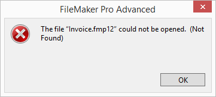
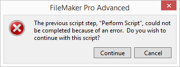

File Missing
The Problem
-
When starting FrameReady you may see a message that a file could not be opened.

It may be other files, e.g. Data01.fmp12 or Contacts.fmp12
-
After you click OK, then the Open File dialog box appears, asking that you locate the file or click Cancel to cancel any further requests for this file.
Tip: There may be multiple requests for this file, so you may need to click cancel multiple times.
-
Click Cancel.
-
A FileMaker error alert appears.

-
Click Cancel again.
-
When the Main Menu appears, choose File and select Exit / Quit.
The Reason
-
FileMaker has lost its connection to one or more of the FrameReady files.
-
Since FrameReady is comprised of multiple files, it is temporarily unable to continue.
What to Look For
-
If this is a networked computer, then it is possible that the computer has lost it's network connection and can no longer open the FrameReady files. We recommend you check the computer's network settings.
-
Or, the computer was sleeping/hibernating and, after being awoken, could not locate the file. We recommend you adjust your computer's power settings and disable hibernation.
-
On the Host computer, exit FrameReady and re-open. Once open, attempt to connect the Guest computer using File > Open > Hosts... button.
© 2023 Adatasol, Inc.